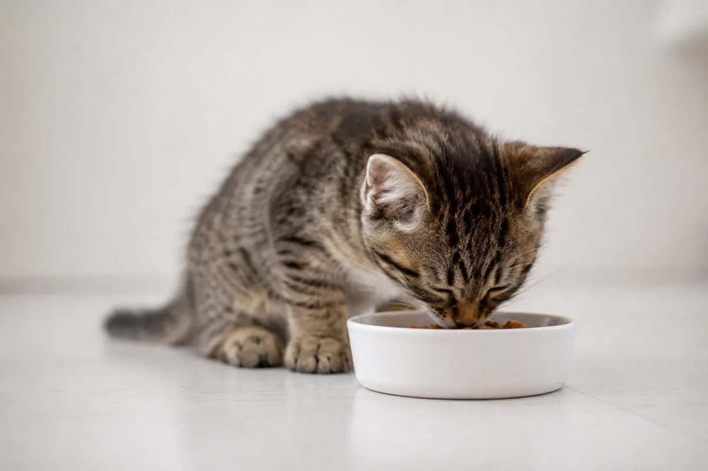
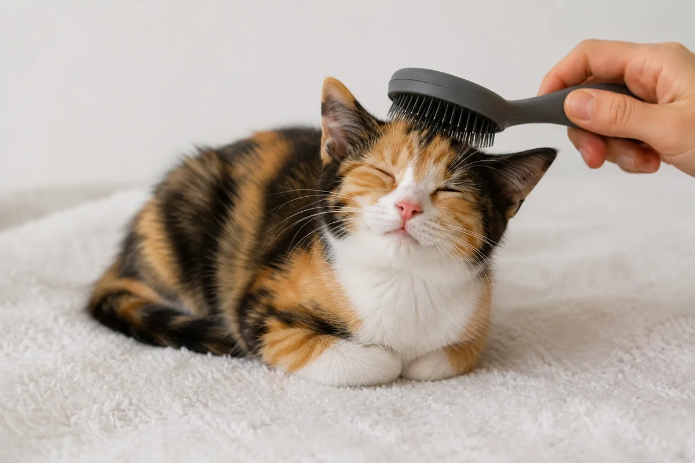
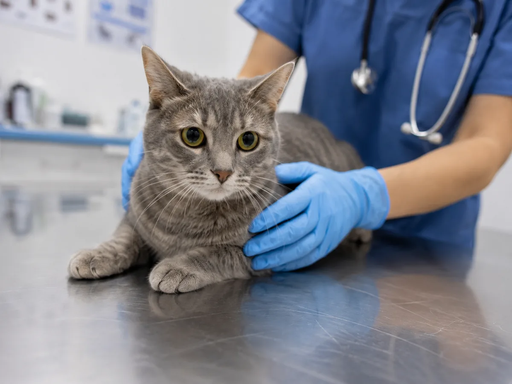
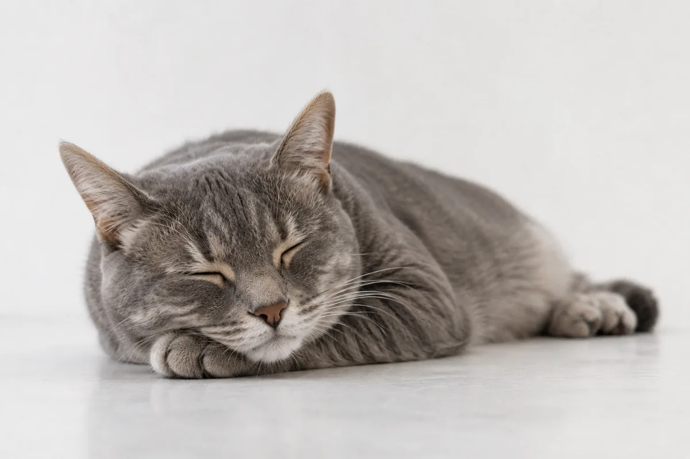
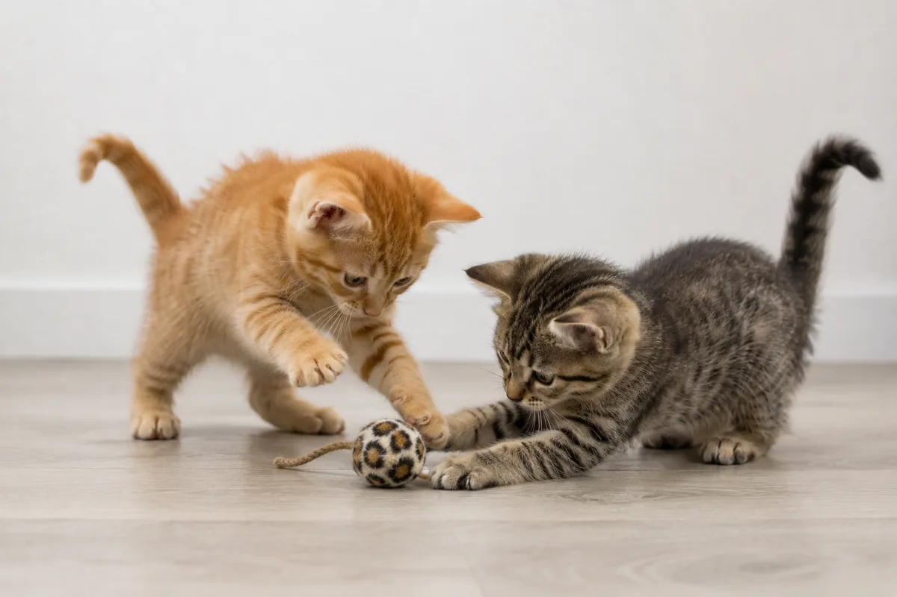
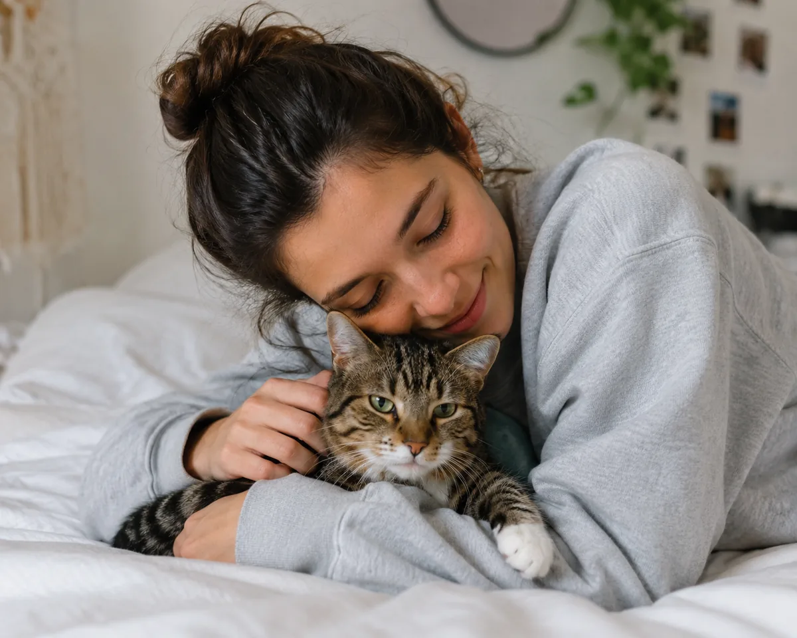

Todo lo que
tu gato necesita
Consejos de expertos para que viva sano, feliz y lleno de energía.

AlimentaciónAlimentación equilibrada
La nutrición es la base de una vida larga y saludable.
- 🕐 Horarios fijos: establecé 2 o 3 comidas al día a la misma hora.
- 💧 Hidratación: asegurate de que siempre tenga agua fresca disponible.
- ⚖️ Porciones: respetá las cantidades según peso y edad para evitar la obesidad.
- 🚫 Evitá: cebolla, ajo, uvas, chocolate y lácteos; son tóxicos para los gatos.

HigieneHigiene y aseo
Un gato limpio es un gato feliz. ¡Y vos también lo agradecés!
- Cepillado: cepillá a tu gato 2-3 veces por semana para evitar bolas de pelo.
- 🦷 Dientes: cepillá sus dientes o usá snacks dentales para prevenir el sarro.
- 👂 Oídos: revisalos semanalmente y limpialos con un paño suave si hay suciedad.
- ✂️ Uñas: cortá las uñas cada 2-3 semanas para evitar que se enreden.

SaludSalud preventiva
Prevenir es siempre mejor (y más barato) que curar.
- 💉 Vacunas: cumplí el calendario de vacunación anual indicado por tu vet.
- 🔬 Chequeos: una visita al veterinario cada 6 meses detecta problemas a tiempo.
- 🐛 Antiparasitarios: desparasitá de forma interna y externa cada 3 meses.
- 🏥 Castración: reduce el riesgo de enfermedades y mejora su calidad de vida.

PrevenciónSeñales de alerta
Conocé los síntomas que no hay que ignorar nunca.
- 😿 Cambios de ánimo: si está muy apagado o irritable, consultá al vet.
- 🍽️ Sin apetito: más de 24 hs sin comer es motivo de consulta urgente.
- 🚽 Orina: sangre, esfuerzo o poca frecuencia pueden indicar problemas renales.
- 👁️ Ojos y nariz: secreciones amarillas o verdes son señal de infección.

EjercicioEjercicio y juego
Un gato activo es un gato sano. El juego es esencial.
- 🎾 Juego diario: dedicá al menos 15 minutos de juego activo por día.
- 🧸 Variedad: rotá los juguetes para mantener su curiosidad activa.
- 🌿 Enriquecimiento: rascadores, túneles y plataformas estimulan su instinto.
- 🏃 Obesidad: el juego regular previene el sobrepeso y sus consecuencias.

EmociónBienestar emocional
Los gatos también sienten estrés. Tu compañía es clave.
- 🏠 Espacio propio: tener un lugar seguro y tranquilo reduce el estrés.
- 🤝 Vínculos: el contacto físico afectivo fortalece la confianza.
- 🔊 Ruido: evitá los ambientes muy ruidosos; les genera ansiedad.
- 🐾 Rutinas: los gatos aman la previsibilidad; mantené horarios estables.